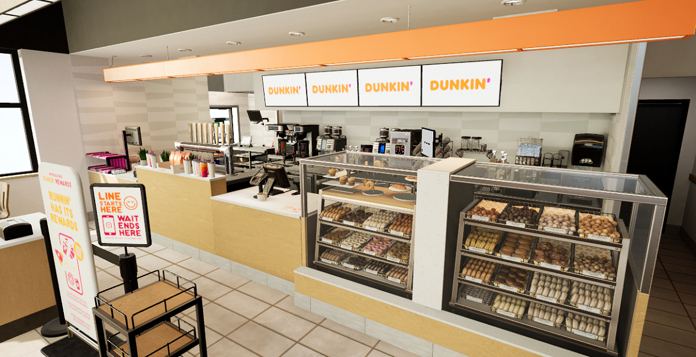

Hey Epic Mega Grants
We’ve got a prototype of VR training for Dunkin Donuts using Unreal that we would love to show you. We made it for a friend that owned a few stores as a prototype last year but it has evolved into a compelling demo of how new employee training can be done completely in a headset. We are about to reach out to Inspire Brands (owners of Dunkin) to share it with them, but feel the potential here is too great to do it alone and would love Epic's support.
Currently we have completed a demo of the beverage module of training and are looking to complete it and 3 other modules (sandwich station, drive-thru & donut prep) to have a v1 ready to start training new employees with Unreal. Our original plan was to ask Inspire Brands to fund the development costs, but we would like to ask if Epic would be able to help reduce the costs with a MegaGrant to make the pitch to Inspire impossible for them to say no to.
If we are successful, Inspire Brands will undoubtedly want to roll this out for all of their brands (Arby's, Buffalo Wild Wings, Sonic, Jimmy John's, Dunkin' and Baskin-Robbins) with the future potential to spread across the entire fast food industry. Our company cannot service all the fast food franchises alone so our long term plan is to release an SDK/template for all Unreal developers to have new work opportunities creating training for quick service restaurants worldwide.
As the games industry becomes increasingly saturated, we believe that exploring other industries is the best thing Epic can do for its developers to increase the value of having a skillset in Unreal.
Thank you for your consideration,
Driven Arts
GRASP: Fast Food Training
VR training for Dunkin’ Donuts employees built in Unreal Engine.

Elevator Pitch
GRASP is an Unreal Engine VR training app that lets new Dunkin' hires master peak-hour operations in 15 minutes.
Overview
- Fast food is a $1.1 trillion industry with 13 million employees.
- $17.5 billion yearly cost associated with employee turnover and retraining.
- VR training reduces training time and eliminates the massive costs of old ineffective systems.
- Headsets are now at an accessible price point ($299) and getting cheaper.
Problem
- Existing training solutions are dangerously bad. We took the online crew member training for Dunkin’ and were not prepared for the job - pictures and text on a website do not work.
- High turnover rates and ineffective training increase operational costs and reduce workforce efficiency.
- Restaurant owners are out of touch with the next generation of crew members they need to hire and train.
Solution
- Hands‑on experience in a real virtual store for fun, immersive, risk‑free, interactive learning.
- A modular Unreal Engine training platform simulating peak store operations and multiple roles.
- Meets the next generation of gamers in a way they enjoy.
- “A spoonful of sugar makes the medicine go down.”
Does It Work?
- Yes - companies like OssoVR report up to 300% improvements in outcomes for surgical training.
- Early testers of our Dunkin’ VR training show a remarkable increase in competence.
- A Dunkin’ franchise owner told us he learned more about a crew members role from our demo than from official corporate materials.
What We’ve Built
- Prototype for Dunkin’: beverage preparation in a virtual store.
- Small hot coffee (10 steps)
- Medium espresso (15 steps)
- Signature latte (20 steps)
Early validation: franchise owners found our demo more informative than official corporate training.
Strategy & Roadmap
- Approach Inspire with a v1 offer that’s impossible to refuse by developing at little to no cost with MegaGrant support.
- “We can do anything but we can’t do everything.” Focus on one brand, get it right, and avoid poisoning the broader opportunity.
- Learn the hard problems with one brand before scaling to larger chains like McDonald’s, Starbucks, Chick‑fil‑A, and Taco Bell (which represent the majority of the market).
- Release an XR SDK/template so Unreal developers can help fulfill exploding demand for QSR training.
Team Expertise & Partnerships
- George: 11+ years of Unreal Engine experience; led development on multiple multiplayer games, and built the demo.
- Lee: 15 years in the games industry across product development, marketing, and operations.
- Alex: Programmer and animator at 2K Games with 12+ years in game animation.
- David: 15‑year environment artist; created the demo’s visuals; ships content on fab.com.
- Aaron: Advisor and part‑owner of 10 Dunkin’ locations; strategic partner and customer.
V1 Scope & Plan
We will pitch Inspire Brands on funding a v1 pilot to run in a few Dunkin’ stores. The goal is a 15‑minute experience that recreates peak‑hour operations so trainees build real muscle memory.
Imagine an employee wears a GoPro for a full 8‑hour shift; we select the 15 busiest minutes and reproduce the same interactions in VR.
- Beverage
- Completed: Coffee (easy), Cappuccino (medium), Signature Caramel Latte (hard).
- Remaining 20 beverages:
- Espresso & Coffee: Iced Coffee, Cold Brew, Americano, Iced Americano, Latte, Iced Latte, Macchiato, Iced Macchiato, Espresso
- Teas: Tea, Iced Tea, Hot Chocolate, Matcha Latte, Iced Matcha Latte, Chai Latte, Iced Chai Latte
- Frozen: Frozen Coffee, Coolatta, Frozen Chocolate, Frozen Matcha Latte
- Sandwich Station
- Art complete; implement guided assembly gameplay for:
- Sausage, Egg & Cheese; Bacon, Egg & Cheese; Turkey Sausage, Egg & Cheese; Egg & Cheese
- Sourdough Breakfast Sandwich; Wake‑up Wrap; Hash Browns; Snackin’ Bacon
- Stuffed Bagel Minis; Bagels with Cream Cheese; Muffins; Croissant; English Muffin
- Art complete; implement guided assembly gameplay for:
- Drive‑Thru
- Implement remaining POS menus (bakery, sandwiches, retail, local, functions) and develop customer interactions that challenge the player across menus.
- Donut Prep
- Artwork exists; implement instruction for batter creation, cutting rings, frying, glazing/sprinkling.
- Expediter
- Compare order contents to receipts; low art needs but heavy gameplay to cover common mistakes.
Estimate: ~3 months per module; ~12 months total for dev + QA with two full‑time team members (1 programmer, 1 artist).
Why Epic
- Creates a new category for Unreal: enterprise training at QSR scale.
- Establishes Unreal as the credible alternative to Unity in enterprise XR training for QSR deployments.
- Delivers a flagship, measurable case study with Inspire’s 33,000+ restaurants, creating a reference standard and PR flywheel for Unreal in enterprise.
Funding Request
We are approaching Inspire Brands with a $100,000 proposal to complete development of the initial training modules and prepare a measurable pilot. It would be great if we could tell them Epic is willing to cover a portion of this amount via a MegaGrant.
Any support is greatly appreciated and will help signal confidence to Inspire and accelerate the pilot.
Giving Back
- Open XR SDK/template enabling Unreal developers worldwide to build QSR training modules.
- Creates new work opportunities and broadens Unreal’s footprint in enterprise training.
Contact
- Email: george.rivara@drivenarts.com
- Phone: 516-459-0101
- Demo video
- Request Build